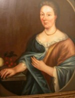

by
Stefan Bielinski
Maria Abeel was born about 1664. She was the daughter of Albany residents Stoffel Janse and Neeltie Croon Abeel. In December 1678, she was identified as a fourteen-year-old daughter and heir in her parents's joint will.
In July 1683, she married artist Gerrit Duyckinck of New York City. By 1702, four children had been christened at the New York Dutch church. She may have borne eleven children. After the wedding, she followed her husband to their home in New York City. During the early 1700s, her husband painted her portrait.
Gerrit Duyckinck died in 1712. Maria Abeel Duyckinck may have died in 1738 and was buried in the church cemetery in New York.
 Sources: The life of Maria Abeel Duyckinck is CAP biography number 130. This sketch is derived chiefly from family and community-based resources.
Sources: The life of Maria Abeel Duyckinck is CAP biography number 130. This sketch is derived chiefly from family and community-based resources.
first posted: 9/30/05